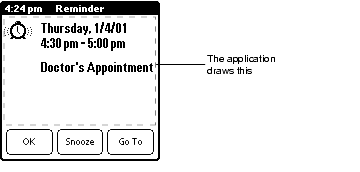
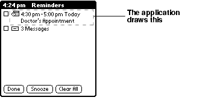
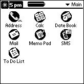
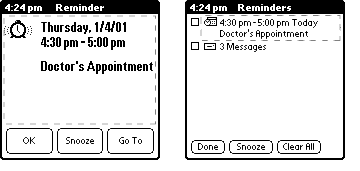

|
In this chapter you learn how to get the user's attention and how to set real-time alarms that can be used to either perform some periodic activity or display a reminder to the user.
This chapter is divided into the following broad topics:
• Getting the User's Attention begins with an introduction to the Attention Manager. This is followed by a detailed description of the Attention Manager from a user's perspective. Finally, it details what developers need to do in order to use the Attention Manager in their applications.
• Alarms covers the Alarm Manager, which can notify your programs when a specified point in time is reached.
Getting the User's Attention

Palm OS® 4.0 introduces a standard mechanism that manages competing demands for the user's attention by both applications and drivers. This mechanism is known as the Attention Manager.
The Role of the Attention Manager
This section provides a brief introduction to the Attention Manager. It covers the relationship between the Attention, Alarm and Notification Managers, and then discusses when it is appropriate to make use of the Attention Manager.
The Attention Manager provides a standard mechanism by which applications can tell the user that something of significance has occurred. It is designed to support communications devices which can receive data without explicit user interaction. The Attention Manager is responsible only for interacting with the user; it is not responsible for generating those events. In particular, the Alarm Manager can be used in conjunction with the Attention Manager to inform the user that a particular point in time has been reached.
By maintaining a single list of all "alarm-like" things, the Attention Manager also improves the user's experience when returning to the handheld after being gone for a while: he no longer has to click through a series of old alarm dialogs. Often the user doesn't care about most of the missed appointments-although he might care about a few of them. Without the Attention Manager, the user cannot selectively dismiss or follow up on dialogs.
Applications have complete control over the types of attention they can ask for. They can query the handheld for the set of special effects available-possibly including sound, vibration, and an LED-and then act on that set. The default option is to beep. All other options are either on or off; different vibrating patterns or multicolored LEDs are currently not supported. Note that the set of special effects is extensible; manufacturers may choose to add other means to get the user's attention beyond the anticipated LED and vibration.
IMPORTANT: The Attention Manager was introduced in Palm OS 4.0. Applications running on earlier versions of the Palm OS need to use the techniques described under "Alarms".
In Palm OS 4.0, the Datebook, SMS, and Clock applications use the Attention Manager. Refer to the Datebook application's source code for real-world examples of how you might use the Attention and Alarm Managers.
Attentions, Alarms and Notifications
The Attention, Alarm, and Notification Managers are distinct subsystems that are often used in combination.
• The Attention Manager is designed solely to interact with the user when an event must be brought to the user's attention.
• The Alarm Manager simply sends an event to an application when a particular point in time is reached. The application can then use the Attention Manager or some other mechanism to bring the alarm to the user's attention, if appropriate.
• The Notification Manager informs those applications that have registered their interest whenever certain system-level or application-level events occur. If the user is to be informed of the event, the executable can use the Attention Manager. The Attention Manager itself uses the Notification Manager to broadcast notifications when getting the user's attention or nagging him about an existing attention item.
When the Attention Manager Isn't Appropriate
The Attention Manager is only designed for attempts to get attention that can be effectively suspended. It is not suitable for anything requiring an immediate response, such as a request to connect to another user or the "put away" dialog that is used during beaming. The Attention Manager also doesn't attempt to replace error messages. Applications must use modal dialogs and other existing OS facilities to handle these cases.
The Attention Manager is also not intended to replace the ToDo application, or to act as a universal inbox. Applications must make it clear that an item appearing in the Attention Manager is simply a reminder, and that dismissing it does not delete the item itself. That is, saying "OK" to an alarm does not delete the appointment, and dismissing an SMS reminder does not delete the SMS message from the SMS inbox.
Attention Manager Operation
This section provides a detailed introduction to the Attention Manager from a user's point of view, introducing some of the terminology used throughout the rest of the chapter and pointing out operational subtleties that you should be aware of when developing applications that use the Attention Manager.
Attention-getting attempts can either be insistent or subtle. They differ only in the lengths to which each goes to get your attention. Insistent attempts get "in your face" by popping up a dialog and triggering other visible and audible special effects in an effort to bring important events to your attention. A meeting reminder or incoming high-priority email message might warrant interrupting your work in this fashion. Subtle attentions substitute a small on-screen attention indicator for the dialog, allowing you to be made aware of less-critical events without interrupting your current work flow. Although they can also trigger various special effects, subtle attentions don't typically do so. Examples of subtle events might include a reminder of an upcoming birthday or holiday, or an incoming SMS message.
Insistent Attentions
When an application makes an insistent attempt to get the user's attention, the detail dialog opens:
Figure 9.1 Detail Dialog

The Attention Manager draws the title and the buttons. The application is responsible for drawing the rest. Most applications draw text and an appropriate icon, as shown in Figure 9.1.
When a second application attempts to get attention, or when the first application makes a second attempt, and the first has not yet been dismissed or snoozed, the window changes to the list dialog, presenting a list of things that require the user's attention:
Figure 9.2 List Dialog

In this dialog, the Attention Manager draws the title and the buttons, and manages the list of items including the checkbox in the left-hand column. Items are listed in order of occurrence, with the newest at the top. The application is responsible for drawing some part of each line, giving it some flexibility over what to display. Applications have space to draw an icon and two lines of text in the standard font on the right-hand side of the list area.
In the detail dialog the OK button dismisses the item. In the list dialog, tapping the checkbox to the left of the item dismisses it. The Clear All button can be used to dismiss all items in the list view. Dismissing an item removes it from the list or closes the detail dialog. Note that although it is gone from the Attention Manager, the item itself remains in the application.
Unique to the list view is a "Done" button which simply closes the list view. It makes no changes to items in the Attention Manager list, nor to any snooze timer.
In either dialog, the "Snooze" button temporarily dismisses the Attention Manager dialog. The attention indicator remains visible and the user can redisplay the dialog at any time. After an interval of five minutes, if any attempts to get attention are still pending the Attention Manager redisplays the dialog. Snooze does not remove attempts to get attention.
There is just one "Snooze" timer, and the snooze operation applies to the Attention Manager as a whole. This can lead to seemingly odd behavior when new attention items are coming in while there is currently a snooze in progress. This situation should be rare, however.
To "go to" an individual item, tap the text or icon of the item in the list dialog or tap the "Go To" button in the detail dialog. This temporarily dismisses the Attention Manager and launches the appropriate application to display details about the item. For an SMS message, this could take you to the detail dialog showing the message, or, if there are more than one, it could take you to the list of pending SMS messages. For an alarm, this could take you to the Datebook view for the current day, with the current meeting scrolled into view. A successful "go to" also removes the attention item from the list.
Note that while the Attention Manager dialogs are displayed, hard and soft buttons are ignored. This is to prevent you from missing an attention item when you turn on the handheld by pressing one of the hard keys.
Subtle Attentions
When an application makes a subtle attempt to get the users attention, no dialog appears. Instead, the title bar of all applications that use the standard form title object show a blinking indicator.
Figure 9.3 Attention indicator

When the list contains one or more items, all of which have been seen by the user, the "star" indicator blinks on and off until the list is empty. When the list contains one or more unseen items, the attention indicator performs an "exploding star" animation.
Tapping this indicator opens the Attention Manager in the list mode, even if there is only one item. Tapping to the right of the indicator, or tapping in the indicator's area when there are no pending attention attempts opens the menu bar as expected.
The attention indicator only functions with applications which use a standard form title object. The indicator doesn't appear when:
• there are no items in the Attention Manager's queue.
• the current application uses a custom title.
• the current application draws in the title area.
• the current form uses the Dialog title style.
• the current application's form title is too narrow to include the attention indicator.
Special Effects
When a new attention item is added, the Attention Manager performs some combination of special effects, which can include playing sounds, flashing a LED, and triggering vibration. The exact combination of effects depends on user settings and on the application itself.
The Attention Manager attempts to open the dialog before performing any special effects so you know immediately why it is trying to get your attention. However, it may not be possible to open the Attention Manager dialog. If this is the case, the Attention Manager performs the special effects as soon as possible. It's better for the user to be made aware that something is happening, even if the handheld cannot say exactly what it is.
System-wide user preferences control the special effects: the volume at which to play alarms, whether or not to flash the LED (if any), whether or not to vibrate (if equipped). Applications can override these system-wide settings in either a positive or a negative way. For instance, an application could always blink the LED, even if the user said not to, or never blink the LED, even if the user desires it in general.
Nagging
As with Datebook alarms in Palm OS 3.5 and earlier, if you don't explicitly dismiss or snooze an attention item it continues to "nag" you at predefined intervals, using the item's specified special effects. Applications control how frequently the user should be reminded, and how many times before the Attention Manager gives up.
When there are multiple attention items competing for nagging, the Attention Manager respects the nag settings for the most recent insistent item, or if there are none then for the most recent subtle item. Each special effect is handled separately; if one reminder wants sound but no vibration, and another wants vibration but no sound, the combination results in the sound from the first one and the vibration from the second one.
Attention Manager and Existing Applications
The Attention Manager makes no attempt to override existing application behavior. If an application written for Palm OS 3.5 or earlier puts up a dialog to get the user's attention, the Attention Manager doesn't get involved. Applications must be specifically written to use the Attention Manager in order to take advantage of its features and seamless integration with the Palm™ user experience.
Some existing third-party applications put up modal alarm-like dialogs. These dialogs can potentially interfere with the Attention Manager. However, issuing of the UI launch code by the Alarm Manager is deferred until after the Attention Manager is closed. This prevents existing applications from putting up their dialogs while the Attention Manager is being displayed. If the reverse happens, and the Attention Manager pops up while an existing application is displaying an alarm-like dialog, only a "go to" becomes problematic: the third-party dialog may consume events required to perform the "go to," preventing it from taking place. This is acceptable, however, since the attention item remains in the Attention Manager's queue. Once the third-party dialog has been dismissed, you can then re-open the Attention Manager and re-initiate the "go to."
Effectively, this means the Attention Manager always shows up on top of any existing application's alarm dialogs that use the Alarm Manager. This ensures that you'll most likely be greeted by the Attention Manager's list after a prolonged period of inactivity.
Getting the User's Attention
This section shows how your applications request the user's attention through the Attention Manager.
Getting the user's attention is simply a matter of calling AttnGetAttention with the appropriate parameters and then handling various callbacks made by the Attention Manager. These callbacks allow your application to control what is displayed in the Attention Manager dialogs, to play sounds or perform other special effects, and to do any necessary processing when the user takes action on an existing attention item.
The AttnGetAttention prototype looks like this:
Err AttnGetAttention (UInt16 cardNo,
LocalID dbID, UInt32 userData,
AttnCallbackProc *callbackFnP,
AttnLevelType level, AttnFlagsType flags,
UInt16 nagRateInSeconds, UInt16 nagRepeatLimit)
Specify the application requesting the user's attention in the cardNo and dbID arguments. You can use the DmGetNextDatabaseByTypeCreator function to obtain these values.
userData is used to distinguish a given attention attempt from others made by the same application; most applications pass the unique ID or other key for the record which caused the attention request. This value is passed to your code through the callback function, and can be an integer, a pointer, or any other 32-bit value as needed by your application.
The callbackFnP argument controls whether the Attention Manager invokes a callback function or issues a launch code to request services from your application. Applications typically supply NULL for this parameter, causing launch codes to be sent to the application specified by the cardNo and dbID arguments. See "Callback or Launch Code?" for a discussion of callback functions and launch codes.
For the level argument, supply kAttnLevelInsistent or kAttnLevelSubtle depending on whether the given attention attempt is to be insistent or subtle.
Regardless of the level of the attention attempt, set the appropriate bits in the flags argument to cause sounds to play, LEDs to blink, or other physical effects to be performed. Depending on which flags you specify, the effect can always occur or can be suppressed by the user. For instance, to trigger a sound while honoring the user's preferences, you need only supply kAttnFlagsSoundBit. Or, to blink the LED but suppress any sounds, regardless of any preferences the user may have set, supply a value of kAttnFlagsAlwaysLED | kattnFlagsNoSound. Finally, to choose only vibrate, do something like:
flags = kAttnFlagsNothing ^ kAttnFlagsNoVibrate
| kAttnFlagsAlwaysVibrate;
While the above is somewhat complex, it does ensure that you override all defaults in the negative except vibration, which is overridden in the positive. See the definition of AttnFlagsType in the Palm OS Programmer's API Reference for a complete set of constants that can be used in combination for the flags argument.
NOTE: Applications may want to verify that the handheld is properly equipped to perform the desired effect. See "Detecting Device Capabilities" for information on how to do this. If the handheld isn't properly equipped to handle a given special effect, the effect isn't performed. For example, if you set the kAttnFlagsLEDBit flag and the Palm Powered ™ handheld doesn't have an LED, the attention attempt is processed as if the kAttnFlagsLEDBit had never been set.
Assuming that the handheld is capable of getting the user's attention using the requested special effect, the nagRateInSeconds and nagRepeatLimit arguments control how often and how many times the special effect is triggered in an attempt to get the user's attention. As the name implies, specify the amount of time, in seconds, the Attention Manager should wait between special effect triggers with nagRateInSeconds. Indicate the desired number of times the effect should be triggered using nagRepeatLimit. Applications typically supply a value of 300 for nagRateInSeconds and a value of 3 for nagRepeatLimit, indicating that the special effect should be triggered three times after the initial attempt, at five minute intervals.
The following line of code shows how the SMS application calls the Attention Manager upon receiving a new SMS message. Note that a subtle attention is generated so that the user isn't interrupted every time an SMS message is received. Also note that the application doesn't override the user's settings when getting his attention. Finally, if the user doesn't respond to the first attention-getting attempt, the special effects are repeated three additional times in five-minute intervals.
err = AttnGetAttention(cardNo, dbID, NULL,
NULL, kAttnLevelSubtle,
kAttnFlagsUseUserSettings, 300, 3);
Callback or Launch Code?
For a given attention item, the Attention Manager calls back to the code resource that created that item whenever the Attention Manager needs the resource to draw the attention dialog contents or whenever it needs to inform the code resource of activity relating to the attention item. The Attention Manager calls back using one of two mechanisms:
• If a callback routine has been specified for a given attention item, the Attention Manager invokes it. This callback routine doesn't have application globals available to it, so it is important that anything necessary to draw or otherwise display be available through commandArgsP. A callback routine is typically used by libraries and system extensions. See the description of the AttnCallbackProc in the Palm OS Programmer's API Reference for the specifics of the callback routine.
• If a callback routine has not been specified for a given attention item, the Attention Manager instead sends a sysAppLaunchCmdAttention launch code to the application that registered the attention item. Accompanying that launch code is an AttnLaunchCodeArgsType structure containing the three parameters documented above. Applications typically use the launch-code mechanism due to the restrictions that are placed on callback routines.
IMPORTANT: It is your responsibility to ensure that the callback procedure is still in the same place when it gets called, dealing with the possibility that the code resource might be unlocked and moved in memory, and with the possibility that the database containing the code resource might be deleted. For the most part, these problems don't exist when using launch codes.
Attention Manager Commands
In addition to calling AttnGetAttention, your code must also respond to commands from the Attention Manager. The Attention Manager issues these commands either by invoking a callback function or issuing a launch code, depending on what you supplied for the callbackFnP argument in the AttnGetAttention call. Among the possible commands are requests for your application to draw the contents of the detail and list dialogs, play application-specific sounds or perform other special effects, navigate to the item in your application that caused the attention item to be posted, and so forth.
Draw Detail and List Dialogs
The Attention Manager's detail and list dialogs are drawn as a joint effort between the Attention Manager and applications requesting the user's attention. The shell of each dialog, the title, and the buttons and checkboxes are drawn by the Attention Manager, while the remainder-text specific to each attention attempt, and frequently an accompanying icon-is drawn by the application itself. This gives each application full control over what sort of information to display.
Figure 9.4 Attention Manager dialogs

Although your application has full control over the display of its attention items, it may only draw in the designated area; active UI elements, such as scroll bars, custom buttons, or other widgets cannot be included. Users should be encouraged to launch the application with the "Go To" button and use the richer UI provided there. The clipping region is appropriately set so that your application cannot accidentally draw outside the designated area.
The kAttnCommandDrawDetail command indicates that your application is to draw the contents of the detail dialog. Along with the command, the Attention Manager passes a structure of type drawDetail. This structure contains the window-relative boundaries of the screen rectangle in which your application is to draw, a flag indicating whether this is the first time the user has seen this attention item, and a set of flags indicating which special effects will also be triggered.
NOTE: Unless the firstTime bit is set, the portion of the detail dialog in which your application draws is not guaranteed to be blank. If firstTime is not set, erase the area indicated by the bounds rectangle prior to drawing the contents of the detail dialog.
The following code excerpt shows how a simple application might render the contents of the detail dialog in response to sysAppLaunchCmdAttention launch code accompanied by a kAttnCommandDrawDetail command:
Listing 9.1 Drawing the contents of the detail dialog
// Draw the icon
resH = DmGetResource(bitmapRsc, MyIconBitmap);
WinDrawBitmap(MemHandleLock(resH),
paramsPtr->drawDetail.bounds.topLeft.x,
paramsPtr->drawDetail.bounds.topLeft.y + 4);
MemHandleUnlock(resH);
DmReleaseResource(resH);
// Draw the text. The content of the string depends on the
// uniqueID that accompanies the kAttnCommandDrawDetail
// command
curFont = FntSetFont (largeBoldFont);
x = paramsPtr->drawDetail.bounds.topLeft.x + 37;
y = paramsPtr->drawDetail.bounds.topLeft.y + 4;
WinDrawChars(alertString, StrLen(alertString), x, y);
FntSetFont(curFont);
For a more complex, real-world example, see the DrawDetailAlarm function in the Datebook application. In particular, note how that application adjusts the displayed text so that it all fits in the allocated space.
Note that because subtle attention items are only shown using the list view, your application doesn't need to respond to kAttnCommandDrawDetail if it doesn't produce insistent attention attempts.
The kAttnCommandDrawList command is similar; it indicates that your application is to draw a portion of the contents of the list dialog. Along with this command, the Attention Manager passes a structure of type drawList, which contains a selected flag in addition to the bounds, firstTime, and flags fields described above. The selected flag indicates whether the item has been selected. Before sending your application the kAttnCommandDrawList command, the Attention Manager sets the background, foreground, and text colors as follows, depending on whether or not the item is selected:
| Affected Color |
Not Selected |
Selected |
| Background Color |
UIFieldBackground |
UIObjectSelectedFill |
| Foreground Color |
UIObjectForeground |
UIObjectSelectedForeground |
| Text Color |
UIObjectForeground |
UIObjectSelectedForeground |
Particularly if your attention item icon is in color, you may need to draw the attention item differently when it is selected. The selected flag exists to allow you to do this.
The code to draw an attention item in the list dialog is very similar to the code you use to draw the same item in the detail dialog. Here is an excerpt:
Listing 9.2 Drawing the contents of the list dialog
// Draw the icon. Ignore the 'selected' flag for this example
resH = DmGetResource(bitmapRsc, MySmallIconBitmap);
iconP = (BitmapPtr)(MemHandleLock(resH));
// center it in the space allotted
iconOffset = (kAttnListMaxIconWidth - iconP->width)/2;
x = paramsPtr->drawList.bounds.topLeft.x;
y = paramsPtr->drawList.bounds.topLeft.y;
WinDrawBitmap(iconP, x + iconOffset, y);
MemHandleUnlock(resH);
DmReleaseResource(resH);
// Draw the text
curFont = FntSetFont(stdFont);
WinDrawChars(alertString, StrLen(alertString),
x + kAttnListTextOffset, y);
FntSetFont(curFont);
The primary differences arise from the fact that the list dialog provides a smaller, more structured area in which to draw. Also, the area in which you draw will always have been erased before you are asked to draw in it, so you don't ever have to erase it beforehand.
The icon should be no wider than kAttnListMaxIconWidth pixels, and should be centered within this width if it is smaller than kAttnListMaxIconWidth. The text should honor a left-hand margin of kAttnListTextOffset pixels. In the above example, the alert string is assumed to fit within the available space; see the DrawListAlarm function in the Datebook application for an example of how that application adjusts the displayed text in the event that it doesn't all fit in the allocated space.
NOTE: Applications may, in certain rare circumstances, receive a kAttnCommandDrawDetail or kAttnCommandDrawList command for an item which is no longer valid. Respond by either calling AttnForgetIt, by drawing nothing, or by drawing an error message.
Play Sound or Perform a Custom Effect
Most applications play a sound when attempting to get the user's attention. If the kAttnFlagsAlwaysSound is set when your application calls AttnGetAttention, the Attention Manager sends a kAttnCommandPlaySound command to your application when attempting to get the user's attention. Your application should simply play the appropriate sound in response to this command. Both the Datebook and SMS applications play sounds based upon the user's preferences when getting the user's attention; see the Datebook application's source code for an example of how to respond to the kAttnCommandPlaySound command.
Because the Attention Manager can potentially play a sound, blink an LED, and vibrate in addition to displaying a dialog or blinking the attention indicator, most applications don't request that some other application-specific custom effect be performed. If your application needs to do something different, you can specify kAttnFlagsAlwaysCustomEffect when calling AttnGetAttention. This causes a kAttnCommandCustomEffect command to be sent to your application, at which time it should perform the desired effect. If your application is like most, however, it won't ever receive a kAttnCommandCustomEffect command, so you needn't worry about responding to it.
Neither kAttnCommandPlaySound nor kAttnCommandCustomEffect are accompanied by any kind of data structure indicating the sound or effect to be performed. If your application doesn't hard-wire this information, you may want to store it in the application's preferences database.
Go There
When the user taps on the "Go To" button in the detail view or on the item text or icon (not the checkbox) in the list view, your application receives a kAttnCommandGoThere command. It then needs to switch to your application and display the information relating to the chosen attention item. The kAttnCommandGoThere command is similar to the sysAppLaunchCmdGoto launch code, but you don't have globals when your application receives the kAttnCommandGoThere command and your application is called using SysAppLaunch, rather than SysUIAppSwitch. Because of this, most applications perform a SysUIAppSwitch upon receiving kAttnCommandGoThere.
Note that your application should verify that the data that triggered the attention attempt is still relevant. In the Datebook, for instance, the user could:
1. Be alerted to an appointment by the Attention Manager. 2. Tap "Snooze." 3. Press the Datebook button and delete the appointment that was just brought to the user's attention. 4. Tap the blinking attention indicator. 5. Tap the attention item corresponding to the now-deleted appointment.
In this scenario, the Datebook application could theoretically receive a kAttnCommandGoThere command along with a unique ID referencing a Datebook record that has been deleted. Whenever the Datebook application receives kAttnCommandGoThere along with a unique ID for a deleted Datebook database record, it calls AttnForgetIt for the now defunct attention item and then returns.
In reality, the Datebook calls AttnForgetIt whenever the user deletes an alarm, and whenever an alarm is determined to be no longer valid. It can do this without even checking to see if the alarm is among those that the Attention Manager is currently tracking; if you pass a combination of card number, database ID, and unique ID to AttnForgetIt that doesn't correspond to an item in the Attention Manager's queue, AttnForgetIt does nothing and returns a value of false.
Most applications will choose to call AttnForgetIt once the user has viewed the data corresponding to the attention item. This is how the SMS application operates: incoming messages are brought to the user's attention via the Attention Manager, and are removed from the Attention Manager's queue once they've been read.
Got It
When the user dismisses a particular attention item, a kAttnCommandGotIt command is sent to the application. Along with this command is a boolean that indicates if the item was explicitly dismissed by the user, since kAttnCommandGotIt is also issued as the result of a successful AttnForgetIt call. Upon receipt of this command, you may want to clean up memory, delete an alarm, or do other application-specific processing.
Iterate
When something happens that may potentially cause an application's attention items to become invalid, that application should call AttnIterate. AttnIterate generates a series of kAttnCommandIterate commands, one for each of the application's pending attention items. Thus, when your application receives a kAttnCommandIterate command it should validate the indicated attention item and take appropriate action if the item is no longer valid-up to and including calling AttnForgetIt for the item.
The SMS application does not respond to kAttnCommandIterate. The Datebook does; this command is generated whenever the user updates his preferences. Many applications call AttnIterate after receiving a sysAppLaunchCmdSyncNotify launch code so that they can update (with AttnUpdate) or remove (with AttnForgetIt) items which were affected by the HotSync® operation.
Note that you can safely call AttnForgetIt from within the iteration since AttnForgetIt only marks the record for deletion and thus doesn't confuse the iteration.
Snooze
Most applications-including the Datebook and SMS applications-ignore kAttnCommandSnooze, which indicates that the user has tapped the Snooze button. Beyond the unique ID that identifies the attention item, nothing accompanies the Snooze command. kAttnCommandSnooze is passed to each and every item currently pending, insistent or subtle. This means that applications with more than one attention item pending receive this command more than once.
Triggering Special Effects
The Attention Manager activates any requested special effects for each attention item, but your application might want to activate those special effects without also posting an attention item to the queue. You can do this through a call to AttnDoSpecialEffects. Supply the appropriate combination of flags to trigger the desired effects. See AttnFlagsType for a complete list of flags.
Attentions and Alarms
The Attention Manager is often used in conjunction with the Alarm Manager to get the user's attention at a particular time. The basic use of the Alarm Manager is covered in "Alarms", but because the Attention Manager handles UI synchronization, do the following when using the Alarm Manager with the Attention Manager:
• Call AttnGetAttention when your application receives the sysAppLaunchCmdAlarmTriggered launch code.
• In your sysAppLaunchCmdAlarmTriggered handling code, set the purgeAlarm field in the launch code's parameter block to true before returning. This removes the alarm from the queue, so your application won't receive the sysAppLaunchCmdDisplayAlarm launch code.
Don't wait until the sysAppLaunchCmdDisplayAlarm launch code is received to call AttnGetAttention: sysAppLaunchCmdDisplayAlarm is not issued while another Alarm Manager dialog is open, so the Attention Manager is prevented from doing anything if a "legacy" application is displaying an Alarm Manager dialog.
NOTE: If you want to use the Alarm Manager to force periodic updates of your application's attention items, don't call AttnUpdate after receiving an Alarm Manager launch code since this keeps the handheld from sleeping. Instead, use a procedure alarm a described under "Setting a Procedure Alarm" and call AttnUpdate from within your procedure alarm callback function.
Detecting and Updating Pending Attentions
Once your application has requested that the Attention Manager get the user's attention, it may later need to update that attention request. For instance, if your application uses a single attention item to indicate that a number of unread messages have been received, it should update that item as additional items are received and read. The Attention Manager provides a handful of functions that allow applications to examine the Attention Manager's queue and update the items within that queue.
The AttnGetCounts function allows you to determine how many items are currently competing for the user's attention. It always returns the total number of items, but can return the number of subtle and/or insistent items as well. It can also return the counts for all applications. For instance, the following would set numItems to the total number of pending attention items from all sources:
numItems = AttnGetCounts(0, 0, NULL, NULL);
Or, to get the number of subtle and insistent attention items in addition to the total requested by a single application, use something like:
numItems = AttnGetCounts(cardNo, dbID,
&insistentItems, &subtleItems);
To verify each pending attention item for a given application, use the Attention Manager's AttnIterate function as described under "Iterate".
After a HotSync is a popular time to invoke AttnIterate; the HotSync operation may have altered the application's underlying data in such a way as to render pending attention items obsolete or invalid.
Deleting Pending Attention Items
In many cases you'll need to delete an attention item. For instance, a HotSync may alter the underlying application data in such a way so as to invalidate the attention attempt. Or, the user might switch to your application and manually update the data in a similar way, for example by deleting an appointment for which there is a pending alarm. The AttnForgetIt function exists for this purpose. Simply invoke this function and supply the card number, database ID, and user data that uniquely identify the attention attempt. You don't even have to verify that the attention attempt is still in the Attention Manager's queue: AttnForgetIt doesn't complain if the attention attempt doesn't exist, merely returning a value of false to indicate this condition.
Updating Pending Attention Items
To update an existing attention item, use AttnUpdate. This function is very similar to AttnGetAttention, though instead of actual values you pass pointers to those values you want to update. Supply NULL pointers for flagsP, nagRateInSecondsP, and/or nagRepeatLimitP to leave them untouched. For instance, to change the flags that control the special effects used to get the user's attention, do the following:
Listing 9.3 Updating an existing attention item
// This assumes that cardNo, dbID, and myUserData are
// declared and set elsewhere to values that identify the
// attention item we're trying to update
Boolean updated;
AttnFlagsType newFlags;
// set newFlags appropriately
updated = AttnUpdate(cardNo, dbID, myUserData, NULL,
&newFlags, NULL, NULL);
if (updated){
// update succeeded
} else {
// update failed - attention item may no longer exist
}
NOTE: Although AttnUpdate may cause a given attention item to redraw, it does not rerun the special effects (if any) that occurred when that attention item was added. If you want to trigger Attention Manager effects for a particular item, call AttnForgetIt followed by AttnGetAttention.
When calling AttnUpdate, note that you must not only supply the card number, database ID, and user data that uniquely identifies the attention attempt; you must also supply a pointer to the callback procedure if one is used.
While updating the attention item, if the handheld is on and the Attention Manager dialog is currently showing then AttnUpdate forces the item to be redrawn. This in turn calls back to the client application so that it can update its portion of the dialog. AttnUpdate causes the specified item to be redrawn if it is visible, regardless of the flags, nagRateInSeconds, and nagRepeatLimit parameters.Thus, AttnUpdate isn't limited to updating one or more aspects of an attention item; it also allows an application to update the text of an attention attempt without having to destroy and then rebuild the Attention Manager dialog.
Note that if the handheld is off, the update is delayed until the handheld is next turned on; AttnUpdate doesn't itself turn the screen on.
Detecting Device Capabilities
Although you can blindly request that a given special effect, such as vibration, be used to get the user's attention without checking to see if that special effect is supported on the Palm Powered handheld, you may want your application to behave differently in the absence of a particular device feature. The Attention Manager defines a feature that you use with the FtrGet function to determine the handheld's physical capabilities. You can also use this feature to determine the user's attention-getting preferences. For example:
Listing 9.4 Checking for vibrate capability
// See if the device supports vibration
FtrGet(kAttnFtrCreator, kAttnFtrCapabilities, &capabilities);
if (capabilities & kAttnFlagsHasVibrate){
// Vibrate-specific processing goes here
...
}
See "Attention Manager Feature Constants" in the Palm OS Programmer's API Reference for descriptions of all of the relevant flags.
Controlling the Attention Indicator
For the most part, applications can ignore the attention indicator, which consumes a small portion of a form's title bar. If the currently-displayed form doesn't have a title bar, or if the form is modal, the attention indicator isn't drawn. However, if an application takes over the entire screen or does something special with the form's title bar, it should explicitly disable the attention indicator while the form is displayed.
As an example, the Datebook application disables the attention indicator when:
• a note associated with a Datebook entry is displayed.
• an entry's description is being displayed in the week view.
• the time is being displayed in the title bar in place of the date.
To disable the attention indicator, simply call AttnIndicatorEnable and supply a value of false for the enableIt argument. To re-enable it, simply call AttnIndicatorEnable again, this time supplying an argument value of true.
If your application disables the attention indicator, it may want to provide some means for the user to open the Attention Manager's dialog in list mode. The AttnListOpen function can be used to do this.
Alarms
The Palm OS Alarm Manager provides support for setting real-time alarms, for performing some periodic activity, or for displaying a reminder. The Alarm Manager:
• Works closely with the Time Manager to handle real-time alarms.
• Sends launch codes to applications that set a specific time alarm to inform the application the alarm is due.
• Allows only one alarm to be set per application.
• Handles alarms by application in a two cycle operation:
- First, it notifies each application that the alarm has occurred; the application verifies that the alarm is still valid at this point. Applications that don't use the Attention Manager typically play a sound here. - Second, after all pending alarms have received their first notification, it sends another notification to each application, allowing it to display some UI.
The Alarm Manager doesn't have any UI of its own; applications that need to bring an alarm to the user's attention must do this themselves. It doesn't provide reminder dialog boxes, and it doesn't play the alarm sound. Applications running on Palm OS 4.0 should use the Attention Manager to interact with the user; see "Attentions and Alarms" for tips on doing this. Applications running on earlier versions of the Palm OS need to provide their own UI, as explained in the following sections.
IMPORTANT: When the handheld is in sleep mode, alarms can occur almost a minute late. This is particularly important to note when utilizing procedure alarms (discussed in "Setting a Procedure Alarm"); although procedure alarms will continue to fire when the handheld is in sleep mode, they may fire less frequently.
Setting an Alarm
The most common use of the Alarm Manager is to set a real-time alarm within an application. Often, you set this type of alarm because you want to inform the user of an event. For example, the Datebook application sets alarms to inform users of their appointments.
Implementing such an alarm is a two step process. First, use the function AlmSetAlarm to set the alarm. Specify when the alarm should trigger and which application should be informed at that time.
Listing 9.5 shows how the Datebook application sets an alarm.
Listing 9.5 Setting an alarm
static void SetTimeOfNextAlarm (UInt32 alarmTime, UInt32 ref)
{
UInt16 cardNo;
LocalID dbID;
DmSearchStateType searchInfo;
DmGetNextDatabaseByTypeCreator (true, &searchInfo,
sysFileTApplication, sysFileCDatebook, true, &cardNo,
&dbID);
AlmSetAlarm (cardNo, dbID, ref, alarmTime, true);
}
Second, have your PilotMain function respond to the launch codes sysAppLaunchCmdAlarmTriggered and sysAppLaunchCmdDisplayAlarm.
When an alarm is triggered, the Alarm Manager notifies each application that set an alarm for that time via the sysAppLaunchCmdAlarmTriggered launch code. After each application has processed this launch code, the Alarm Manager sends each application sysAppLaunchCmdDisplayAlarm so that the application can display the alarm. The section "Alarm Scenario" gives more information about when these launch codes are received and what actions your application might take. For a specific example of responding to these launch codes, see the Datebook sample code included with Palm OS 3.5.
It's important to note the following:
• An application can have only one alarm pending at a time. If you call AlmSetAlarm and then call it again before the first alarm has triggered, the Alarm Manager replaces the first alarm with the second alarm. You can use the AlmGetAlarm function to find out if the application has any alarms pending.
• You do not have access to global variables or code outside segment 0 (in a multi-segment application) when you respond to the launch codes. AlmSetAlarm takes a UInt32 parameter that you can use to pass a specific value so that you have access to it when the alarm triggers. (This is the ref parameter shown in Listing 9.5.) The parameter blocks for both launch codes provide access to this reference parameter. If the reference parameter isn't sufficient, you can define an application feature. See the "Features" section in the "Palm System Support" chapter.
• The database ID that you pass to AlmSetAlarm is the local ID of the application (the .prc file), not of the record database that the application accesses. You use record database's local ID more frequently than you do the application's local ID, so this is a common mistake to make.
• In AlmSetAlarm, the alarm time is given as the number of seconds since 1/1/1904. If you need to convert a conventional date and time value to the number of seconds since 1/1/1904, use TimDateTimeToSeconds.
If you want to clear a pending alarm, call AlmSetAlarm with 0 specified for the alarm seconds parameter.
Alarm Scenario
Here's how an application and the Alarm Manager typically interact when processing an alarm:
1. The application sets an alarm using AlmSetAlarm. The Alarm Manager adds the new alarm to its alarm queue. The alarm queue contains all alarm requests. Triggered alarms are queued up until the Alarm Manager can send the launch code to the application that created the alarm. However, if the alarm queue becomes full, the oldest entry that has been both triggered and notified is deleted to make room for a new alarm.
2. When the alarm time is reached, the Alarm Manager searches the alarm queue for the first application that set an alarm for this alarm time. 3. The Alarm Manager sends this application the sysAppLaunchCmdAlarmTriggered launch code. 4. The application can now: - Set the next alarm. - Play a short sound. - Perform some quick maintenance activity. The application should not perform any lengthy tasks in response to sysAppLaunchCmdAlarmTriggered because doing so delays other applications from receiving alarms that are set to trigger at the same time.
If the application is using the Attention Manager to bring this alarm to the user's attention, call AttnGetAttention here and set the purgeAlarm field in the launch codes' parameter block to true before returning.
If this alarm requires no further processing, the application should set the purgeAlarm field in the launch code's parameter block to true before returning. Doing so removes the alarm from the queue, which means it won't receive the sysAppLaunchCmdDisplayAlarm launch code.
5. The Alarm Manager finds in the alarm queue the next application that set an alarm and repeats steps 2 and 3. 6. This process is repeated until no more applications are found with this alarm time. 7. The Alarm Manager then finds once again the first application in the alarm queue who set an alarm for this alarm time and sends this application the launch code sysAppLaunchCmdDisplayAlarm. Note that alarms that had their purgeAlarm field set to true during the processing of sysAppLaunchCmdAlarmTriggered-including all alarms that are being brought to the user's attention through the Attention Manager-are no longer in the queue at this point. 8. The application can now: - Display a dialog box. - Display some other type of reminder. Applications typically create a nested event loop at this point to handle the dialog's events. This nested event loop ignores virtually all events that would cause the dialog to go away, causing the dialog to be fixed on the screen; it can't be dismissed until one of the embedded buttons is tapped. Note that the currently active application remains active. You may not be able to see it (if the alarm dialog is full screen) and you cannot interact with it because the dialog's nested event loop is processing all events. It is effectively suspended, waiting for an event to occur.
9. The Alarm Manager processes the alarm queue for the next application that set an alarm for the alarm being triggered and steps 7 and 8 are repeated. 10. This process is repeated until no more applications are found with this alarm time. If a new alarm time is triggered while an older alarm is still being displayed, all applications with alarms scheduled for this second alarm time are sent the sysAppLaunchCmdAlarmTriggered launch code, but the display cycle for the second set of alarms is postponed until all earlier alarms have finished displaying.
Note that when a second alarm goes off before the first has been dismissed, the alarm manager sends the sysAppLaunchCmdAlarmTriggered launch code for the second alarm but waits to send the sysAppLaunchCmdDisplayAlarm launch code until after the first alarm's dialog has been dismissed. For applications that put up dialogs, this typically means that only one dialog at a time will appear on the screen. The Alarm Manager doesn't return to the event loop between the issuing of launch codes, so when the first alarm's dialog has been dismissed, the second alarm's dialog is immediately displayed. The net result for the user is that each alarm dialog in turn must be dismissed before the handheld can be used.
Setting a Procedure Alarm
Beginning with Palm OS version 3.2, the system supports setting procedure alarms in addition to the application-based alarms described in the previous sections. The differences between a procedure alarm and an application-based alarm are:
• When you set a procedure alarm, you specify a pointer to a function that should be called when the alarm triggers instead of an application that should be notified.
• When the alarm triggers, the Alarm Manager calls the specified procedure directly instead of using launch codes.
• If the system is in sleep mode, the alarm triggers without causing the LCD display to light up.
You might use procedure alarms if:
• You want to perform a background task that is completely hidden from the user.
• You are writing a shared library and want to implement an alarm within that library.
• You want to use AttnUpdate to update an attention item, but you don't want the display to turn on if the handheld is currently sleeping.
To set a procedure alarm, you call AlmSetProcAlarm instead of AlmSetAlarm. (Similarly, you use the AlmGetProcAlarm function instead of AlmGetAlarm to see if any alarms are pending for this procedure.)
AlmSetProcAlarm is currently implemented as a macro that calls AlmSetAlarm using a special value for the card number parameter to notify the Alarm Manager that this is a procedure alarm. Instead of specifying the application's local ID and card number, you specify a function pointer. The other rules for AlmSetAlarm still apply. Notably, a given function can only have one alarm pending at a time, and you can clear any pending alarm by passing 0 for the alarm time.
When the alarm triggers, the Alarm Manager calls the function you specified. The function should have the prototype:
void myAlarmFunc (UInt16 almProcCmd,
SysAlarmTriggeredParamType *paramP)
IMPORTANT: The function pointer must remain valid from the time AlmSetProcAlarm is called to the time the alarm is triggered. If the procedure is in a shared library, you must keep the library open. If the procedure is in a separately-loaded code resource, the resource must remain locked until the alarm fires. When you close a library or unlock a resource, you must remove any pending alarms. If you don't, the system crashes when the alarm is triggered.
The first parameter to your function specifies why the Alarm Manager has called the function. Currently, the Alarm Manager calls the function in two instances:
• The alarm has triggered.
• The user has changed the system time, so the alarm time should be adjusted.
The second parameter is the same structure that is passed with the sysAppLaunchCmdAlarmTriggered launch code. It provides access to the reference parameter specified when the alarm was set, the time specified when the alarm was set, and the purgeAlarm field, which specifies if the alarm should be removed from the queue. In the case of procedure alarms, the alarm should always be removed from the queue. The system sets the purgeAlarm value to true after calling your function.
It is important to note that your procedure alarm function should not access global variables if the alarm could be triggered after the application that contains the procedure alarm function has terminated (even if the code remains locked in memory), since the globals no longer exist at this point.
Procedure Alarms and Menus
Procedure alarms are often used to update the handheld's display on a regular basis. Menus aren't automatically informed when an alarm is triggered, so if a menu is open when your procedure alarm code updates the display, your code may overwrite the open menu. To detect an open menu, watch for winExitEvent and winEnterEvent as described in "Checking Menu Visibility" of the Palm OS Programmer's Companion, vol. I.
Summary of Attentions and Alarms
| Attention Manager Functions |
|
| |
|
|